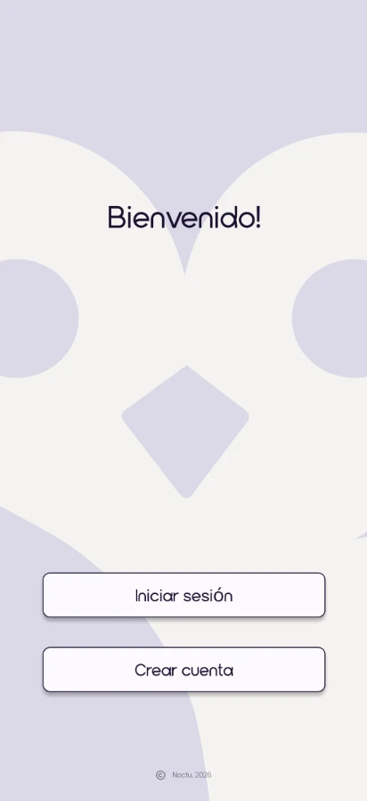
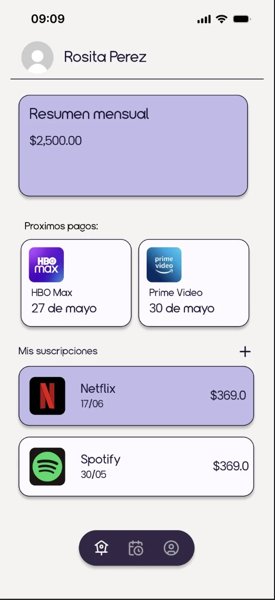
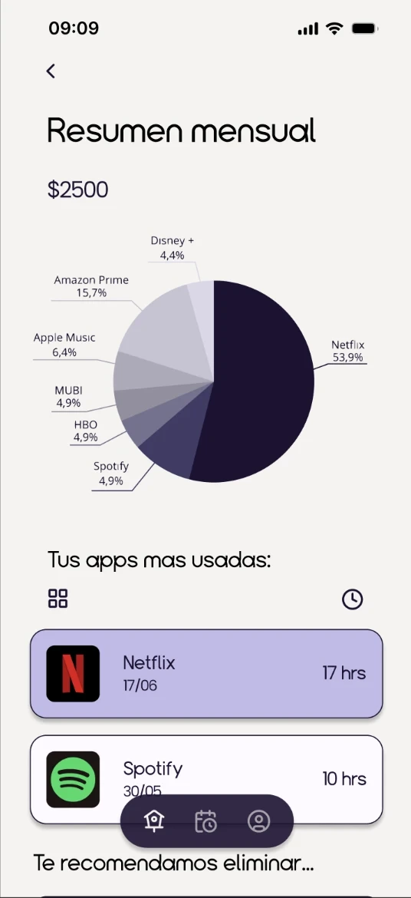
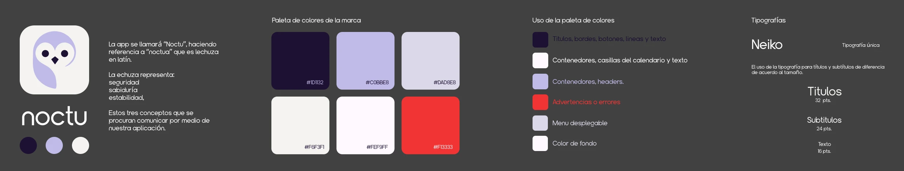
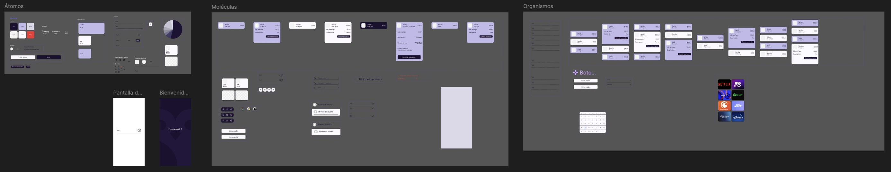
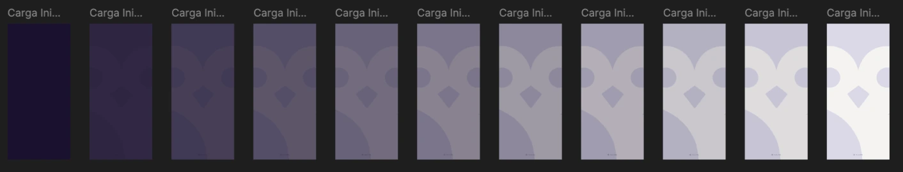
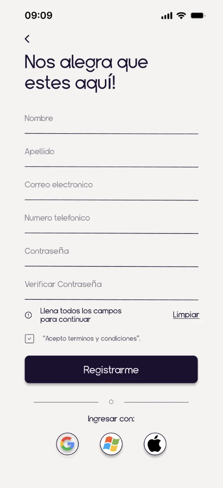
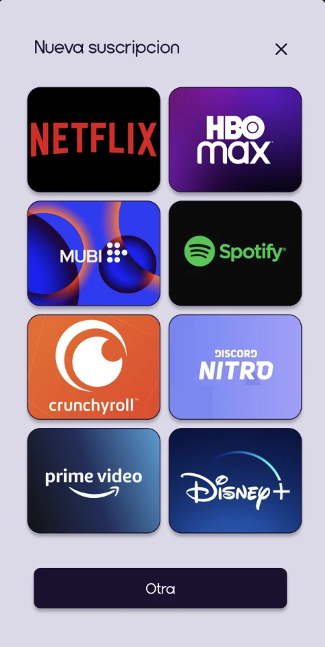
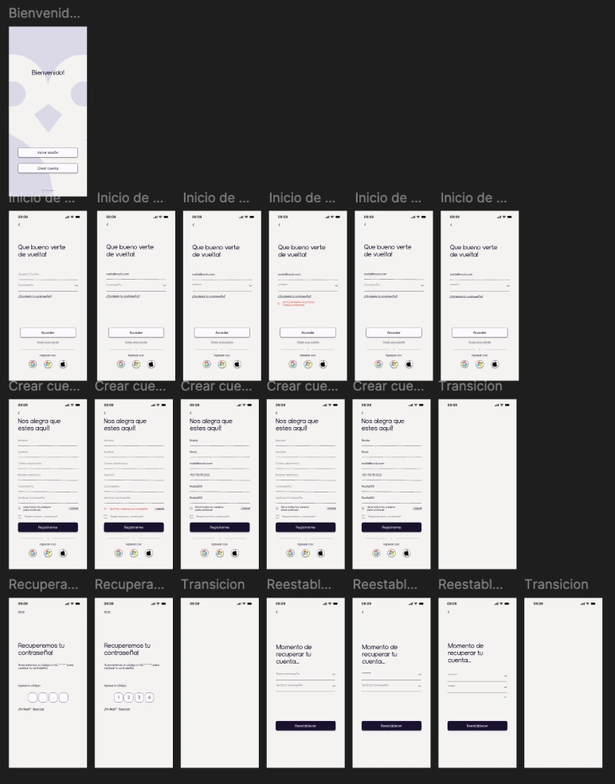
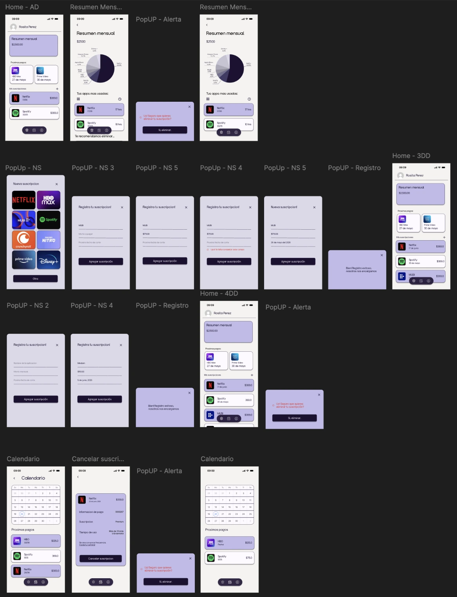

Noctu is an app that helps users track and control the money they spend on digital subscriptions. Its name comes from the Latin noctua, the owl, which stands for security, wisdom and stability.
A university project developed as a team of three, covering the visual identity and the app screens in Figma.
- RoleUX/UI design
- TeamTeam of 3
- WithNancy Rodriguez Gaytán, Nadia Villegas Flores
- ToolFigma
- ContextUniversity project, January 2026



Visual identity
Logo, color palette, palette usage and typography

Design system
Organized with atomic design: atoms, molecules and organisms

Splash screen
Eleven frames: the owl pattern fades in as the background brightens

More screens
Registration and adding a new subscription


User flows
Sign up, sign in, recovery, home, calendar and cancellation, from the Figma file

